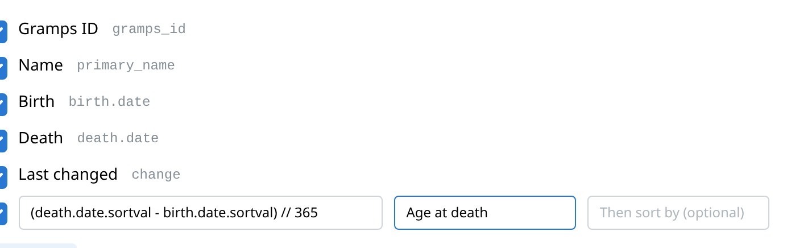
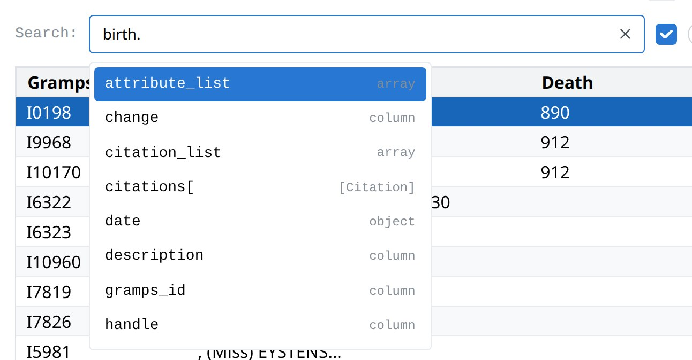
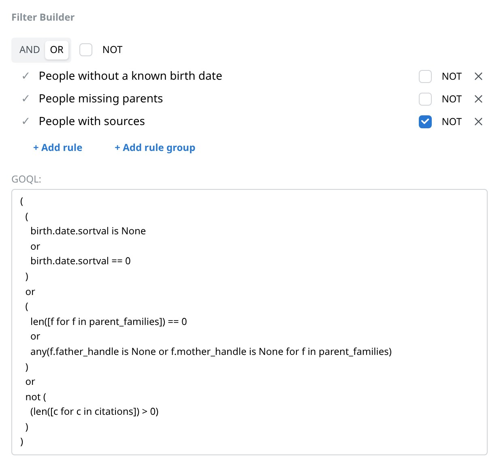
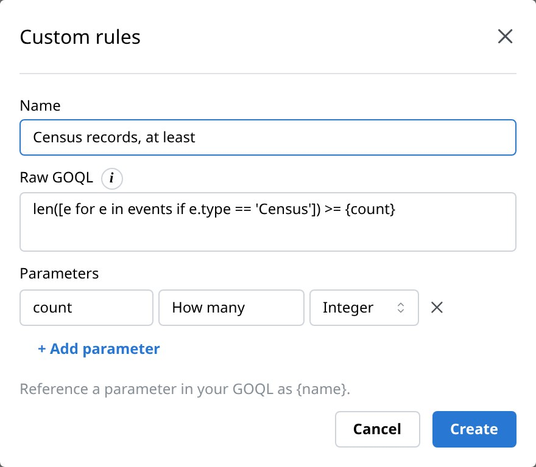

GOQL: one language for your tree's columns, searches and filters
A family tree holds far more than any list can show at once. Gramps Connect’s lists start with a few columns (a person’s name, birth and death), but you might want to see each person’s age at death, their occupation, how many places they lived in or how many grandchildren they had. And you might want to narrow a list down to just the people born in a certain county, or the families where the mother died before the father.
Both are done with GOQL, short for Gramps Object Query Language. GOQL is a small language for pointing at any piece of information in your tree, written in a line of text, and it’s used in two ways:
- To describe a value:
birth.place.titleis the place where each person was born, andlen(children)is how many children each family has. Values make columns, and columns can be sorted. Values also fill in citation templates:`source.title`in a template is replaced by the cited source’s title. - To describe a condition:
birth.place.title == 'Boston'is true for the people born in Boston. Conditions search a list, make up filters and custom rules, and color the people on charts that they match.
A condition is just values compared with each other, so everything you learn for one works in the other. This post explains where GOQL came from and how it works, then goes from simple values and conditions to some of the newest and most powerful forms. You don’t need any programming experience to follow it.
Why a language?
Gramps’ desktop app has a fixed set of columns for each list, and a long but fixed set of filter rules: “People with the given name…”, “Families with a child born after…”. Each rule does one thing. When you want a column or a rule that’s slightly different, there isn’t one, and someone has to write it.
GOQL takes another approach. Instead of a column or a rule for every need, it gives you a handful of building blocks (fields, links between records, comparisons, “and”, “or”, “any of”, “how many”) that you combine to describe things nobody thought of in advance.
Records are structured data
The idea starts with how Gramps stores your tree. Each record (a person, a family, an event, a place, a source, a citation, a note, a media item, a repository or a tag) is a bundle of named fields. Gramps keeps that bundle in a standard text format called JSON. Simplified a lot, a person looks something like this:
{
"gramps_id": "I0044",
"gender": 0,
"primary_name": {
"first_name": "Anna",
"surname_list": [ { "surname": "Smith" } ],
"nick": "Annie"
},
"attribute_list": [ { "type": "Hair color", "value": "Red" } ],
"event_ref_list": [ ... ],
"parent_family_list": [ ... ]
}
Some fields hold a value (gramps_id). Some hold a group of fields
(primary_name has a first_name and a list of surnames). Some hold a
list (attribute_list). And some point to other records: the entries
in event_ref_list lead to this person’s events, and
parent_family_list leads to the families she’s a child in.
GOQL names any of these by following the dots from the outside in:
primary_name.first_name is “Anna”, and primary_name.nick is “Annie”.
That’s called a path. The names are Gramps’ own, so if you’ve ever
looked at a Gramps export or the Gramps developer documentation, they’ll
look familiar. If you haven’t, don’t worry: Tab completion (below)
suggests them as you type.
A few fields that people use all the time get short names of their own:
surname and given_name on a person, title on a place. These are
also the fastest to search and sort by, since the database keeps a
separate index of them.
It looks like Python, but it isn’t run as Python
GOQL is written in the style of Python, the programming language Gramps
itself is written in. That might sound off-putting, but the parts GOQL
borrows are the parts that read like English: and, or, not, in,
“any of these”, “how many of these”.
What you write is never run as a program. Gramps Connect sends it to the Gramps Web API server, which reads it, checks it, and translates it into SQL, the language databases speak. The database itself then works out the values and checks the conditions, right next to your data, and only the results come back to your browser. Each step of a path becomes a step in that SQL: a dot reaches into the stored record, a hop to another record looks that record up, and “how many children” becomes a count.
That’s what makes GOQL fast enough for large trees, and it works the same whether the server keeps your tree in SQLite (the desktop app) or in PostgreSQL (a shared server). It’s also safe: since nothing is run as a program, GOQL can only ever read your tree, and anything that isn’t GOQL is turned away with an error.
That error tries to be helpful. Every path is checked against Gramps’
own description of its records, so a misspelled field such as
primary_name.frist_name is caught before anything runs, with a message
listing the fields that would work.
Where you write GOQL
Columns
Open a list’s Columns dialog with the gear at the end of its title row.
Each built-in column shows, dimmed, the GOQL value it reads: the People
list’s Birth column is birth.date, and the Families list’s Father
column is father.primary_name. Add column gives you three boxes: a
GOQL value, a title, and an optional “Then sort by”.

Anything that gives one value per record can be a column. Dates and names
are shown the way the tree is set to show them, and types (an event’s
type, say) show their name. Click any column’s header to sort the list
by it. “Then sort by” takes a second GOQL value that orders the records
within each group: a birth.place.title column with birth.date as its
“then sort by” lists everyone born in each place together, oldest first.
Columns you add are saved in the tree and offered to everyone on it, so a good column only has to be written once. Saving checks the value against the server first, so a typo shows up right there, not as a broken list.
Searching a list
Tick the checkbox next to any list’s search box (“Use Gramps Object
Query Language”) and the box takes a GOQL condition instead of plain
words. The list narrows to the records it’s true for. The circled i
beside the box opens a reference for that list, and you rarely need it:
press Tab as you type and the box suggests the fields, words and
values that fit at that point, so birth. + Tab lists everything an
event has. (There’s more on Tab in “Let Tab do the typing”, below.)

birth. and pressing Tab lists what a birth event has.Filters and custom rules
The Filters button next to each list’s title opens a dialog of ready-made rules (“Females”, “People without sources”, “Birth date between”) that you combine with AND, OR and NOT without writing anything. Underneath, every rule is a GOQL condition, and the dialog shows the combined GOQL (read-only) below the Filter Builder. It’s a good way to learn: build a filter by clicking, then read the GOQL it made.

When no rule fits, Custom Rules lets you write one in GOQL, give it a
name, and save it in the tree. From then on it appears among the other
rules, for everyone, to use alone or combine. A custom rule can even
have its own values to fill in. Add a parameter to the rule (a number or
a piece of text), give it a name such as count, and write that name in
braces where the value goes:
len([e for e in events if e.type == 'Census']) >= {count}
Picking that rule shows a “count” box, just like a built-in rule that asks for a date.

A custom rule with acount parameter. Create only becomes available once the GOQL checks out. (The forms in it are explained further down.)
Charts
The fan, tree and Generations charts can color the people a filter
matches, in blue, with everyone else in grey. Color → Filter lists
the tree’s saved filters, and its last choice, GOQL…, takes a
condition typed straight into the chart, such as
birth.date.sortval > 0 and birth.date.sortval < Date('1850') for
everyone born before 1850. The chart only checks the people it’s
showing, so this stays quick on a large tree.
Citation templates
Gramps Connect writes each citation out as a formatted reference, from a citation template: a line for the source and a line for the citation, with the parts to fill in between backticks. Each part is a GOQL value. A simple template might be:
`author`, *`title`*[ (`repositories[0].name`)]
`page`[, `date`]
On the source line the values belong to the Source, so `title` is
its title and `repositories[0].name` is the name of the first
repository holding it. On the citation line they belong to the
Citation: `page` is its Volume/Page, and `source.title`
follows the link to the source. Any value that works as a column works
here, including the shorthand for attributes by type, such as
`attribute_list['Film'].value` for a source’s “Film” attribute or
`attribute_list['URL'].value` for a citation’s web address. A part
in square brackets is left out when a value in it is empty, so a source
with no repository doesn’t leave behind empty parentheses.
Gramplets
Gramplets are small programs, written in Python, that run inside Gramps Connect. When they fetch records, they use GOQL for both halves: a condition for which records, and values for what to fetch and how to sort it:
people(where="birth.place.title == 'Boston'", what=["primary_name", "birth.date"], order=["birth.date.sortval"])
Anything you’ve tried out in a column or the search box can be pasted straight into one, and the Gramplet editor completes GOQL with Tab inside those quotes. If you’d rather not write a Gramplet at all, the GOQL Query Gramplet that comes with Gramps Connect takes a condition and a list of values to show, and lays out the matching records as a table.
Simple examples
Each example below says which list it’s written in, since a value or
condition is always about one kind of record: in the People list,
surname means each person’s surname.
Values: fields and links
The simplest value is a field, like gramps_id, surname or
primary_name.nick. The most useful trick is that a path doesn’t have
to stay inside one record: birth leads from a person to their birth
event, place leads from an event to its place, and enclosed_by leads
from a place to the place it’s in. From the Families list, father and
mother lead to the parents. Some values to try as columns:
| In the… | Value | Shows |
|---|---|---|
| People list | primary_name.nick |
each person’s nickname |
| People list | birth.place.title |
where they were born |
| People list | death.place.enclosed_by.title |
the place enclosing where they died (a county, say) |
| Families list | father.birth.date |
the father’s birth date |
| Families list | father.birth.place.title |
where the father was born: three hops, family to father to birth event to place |
| Events list | place.title |
where the event happened |
Conditions: comparing values
A condition compares values with these symbols:
| Write | To mean |
|---|---|
== and != |
is, is not |
<, <=, >, >= |
before/after, less/more |
and, or, not |
both, either, the opposite |
in [ ... ] |
is one of these |
'text' in field |
the field contains this text |
like(field, 'Jo%') |
a pattern, where % means “anything” |
regex(field, '...') |
a regular expression, if you know them |
Text goes in quotes; numbers don’t. In the People list:
surname == 'Smith' and gender == Person.FEMALE
surname in ['Smith', 'Smyth', 'Smythe']
'ann' in given_name
like(given_name, 'Jo%')
regex(surname, '^Mc')
These match every woman named Smith; any of three spellings; a given name containing “ann” (Joanne, Hannah, Susanna); every given name starting with “Jo”; and surnames starting with “Mc”.
Both sides of a comparison can be values from the tree, including values reached through links:
birth.place.title != None and birth.place.title == death.place.title
death.place.enclosed_by.title == 'Ireland'
The first matches people who died where they were born, and the second
people who died in a place inside Ireland. In the Families list,
father.birth.place.enclosed_by.title == 'Cook County' goes four steps,
from family to father to his birth event to its place to the county
it’s in.
Dates
A date written as Date('...') takes any date Gramps understands. As a
column, birth.date shows the date the way your tree displays dates.
To compare dates, use each date’s sortval, its position on the
calendar, which compares like a number:
birth.date.sortval > 0 and birth.date.sortval < Date('1850')
birth.date.sortval > Date('today')
birth.date.modifier == Date.MOD_ABOUT
The first matches everyone born before 1850, and the second matches
birth dates in the future, which are always typing mistakes. sortval
ignores “about”, “before” and “after”, so “before 1850” sorts the same as
plain 1850; when that matters, test the date’s modifier, as in the
third line. (Why the > 0 in the first line? See the next section.)
When nothing is recorded
Trees have gaps, and GOQL is careful to tell you so: a value that isn’t recorded is empty, not a guess. As a column, it’s a blank cell. In a condition, it takes a little thought, because “nothing” is still a value that can be compared:
- A date that isn’t recorded has a
sortvalof 0, which is “before” every real date. Without thebirth.date.sortval > 0above, people with undated births would match “born before 1850”. To find the undated ones on purpose, writebirth.date.sortval == 0. - A missing linked record or field is
None, meaning “nothing recorded”. Two missing places are equal to each other, so without thebirth.place.title != Noneabove, everyone with neither a birth nor a death place would match “died where they were born”. - Text that’s present but empty is
''. In the Families list,father.surname != '' and father.surname == mother.surnamefinds couples who share a surname, and leaves out couples where neither surname is filled in.
So when a condition compares two values, or asks for something “before” a date, think about the records where one side is missing. The same goes for the mother’s death in the Families list:
mother.death.date.sortval > 0 and mother.death.date.sortval < father.death.date.sortval
Arithmetic (below) handles this for you: a calculation with a missing value in it gives no value at all.
Types by name
Gramps stores an event’s type, a family’s relationship type and many others as a number behind the scenes. As a column, a type shows its name. In a condition, you write the name you see in Gramps. In the Events list:
type == 'Census'
type in ['Burial', 'Cremation']
type == 'Tax list'
The last one is a custom type, one a researcher typed in themselves.
Custom types work exactly like Gramps’ own, and capital letters don’t
matter. A type can be compared on a linked record too: from the People
list, birth.type == 'Baptism' matches people whose birth event is
recorded as a baptism.
A few other fields compare with named values: gender == Person.MALE,
or, in the Citations list, confidence >= Citation.CONF_HIGH.
Calculating values
Numbers can be added, subtracted, multiplied and divided. // divides
and drops the fraction, which turns a count of days into whole years. So
this value is each person’s age at death, a good column to add to the
People list:
(death.date.sortval - birth.date.sortval) // 365
People without a dated birth and death get a blank cell rather than a
nonsense number. Compare it to make a condition:
(death.date.sortval - birth.date.sortval) // 365 >= 100 matches
everyone who lived to 100. In the Families list,
mother.birth.date.dateval[2] > father.birth.date.dateval[2] + 10
matches mothers more than ten years younger than the father
(dateval[2] is a date’s year).
Complex examples
The simple examples follow one link at a time: one birth, one father, one place. But much of a tree comes in lists: a family has any number of children, a person has many events. This is where GOQL gets its real power.
Words for related records
GOQL knows a set of words for the records connected to each kind of record:
| On a… | Word | Means |
|---|---|---|
| person | parent_families |
the families they’re a child in |
| person | families |
the families they’re a parent in |
| person | siblings |
their brothers and sisters, each once |
| person | events |
all their events, not just birth and death |
| person | associations |
people linked to them by an association |
| person | child_refs |
their link to each parent family, with its relationship (birth, adopted, …) |
| family | children |
the family’s children |
| family | events |
marriage, divorce and other family events |
| event | event_refs |
the people and families the event belongs to, with their roles |
| place | enclosing_places |
the places it’s inside of |
| source | repositories |
where the source is kept |
| most records | notes, citations, media, tags |
what’s attached to them |
| every record | backlinks |
every record that points to this one |
How many, which one, any of them
A list holds many records, but a column shows one value. There are two ways to get one value out of a list, and one way to make a condition of it.
How many? len(...) counts, and a count is a value, so it can be a
column:
len(children)
len(siblings)
len([e for e in events if e.type == 'Census'])
How many children a family has, how many brothers and sisters a person
has, and how many census events a person has. The last line shows how to
count only some of a list: put the list in square brackets with an
if and a condition. Read it as “the list of every e among the
events, if e’s type is Census”. The e is just a short name for “each
event in turn”. You can call it anything, as long as you use the same
name before and after for.
Compare a count, and it’s a condition: len(siblings) == 0 matches only
children, and len(children) > 8 large families.
Which one? A number in square brackets picks an entry, counting from
0. parent_families[0] is a person’s first parent family, which Gramps
treats as their main parents, so in the People list these are each
person’s father and paternal grandfather:
parent_families[0].father.primary_name
parent_families[0].father.parent_families[0].father.primary_name
You can also pick the first entry that matches a condition, by putting
the [0] after a bracketed list with an if. This value is the mother
in a person’s first parent family where the father is a Smith:
[f for f in parent_families if f.father.surname == 'Smith'][0].mother.primary_name
Is there any? any(...) is a condition: it’s true when at least one
entry matches. In the Families list, this matches families with at least
one daughter:
any(c.gender == Person.FEMALE for c in children)
Read it aloud as “is there any c, among the children, whose gender is
female?” Put not in front for the opposite. In the People list:
not any(e.type == 'Census' for e in events)
not any(c for c in citations)
The first matches people with no census event. The second leaves out the condition entirely, which just asks “is there anything there at all?”: people with no citations.
Picking entries by name
Some lists are naturally sorted by type: a person’s attributes, their web links, an event’s participants. For these, put the type’s name in the square brackets instead of a number. In the People list, this value is each person’s occupation, a useful column:
attribute_list['Occupation'].value
With len(...) or any(...), the bracket means all entries of that
type:
len(attribute_list['Occupation']) > 1
any(a.value == 'Miller' for a in attribute_list['Occupation'])
urls['Web Home'].path != None
These match people with more than one occupation, people who were a
miller at some point, and people with a home page. The same works for
attribute types you made up yourself (attribute_list['Hair color']).
The same brackets pick people by their role in an event. In the Events
list, event_refs is everyone the event belongs to, and referrer is
the person (or family) on each link. This value is each event’s main
person, which Gramps calls the Main Participant:
event_refs['Primary'].referrer.primary_name
And this value is the main person’s age at the time of the event:
(date.sortval - event_refs['Primary'].referrer.birth.date.sortval) // 365
As conditions, len(event_refs['Witness']) > 2 matches events with
more than two witnesses, any(r.referrer.surname == 'Smith' for r in
event_refs['Witness']) events a Smith witnessed, and type == 'Death'
and (date.sortval - event_refs['Primary'].referrer.birth.date.sortval)
// 365 > 90 deaths at over 90.
Looking backwards: backlinks
Every word so far reaches outward from a record. backlinks reaches
the other way: everything that points to this record. In the Places
list, len(backlinks['Event']) is how many events happened at each
place, a column that, sorted, shows your busiest places first.
Name a kind of record in brackets, as there, and backlinks becomes
those records themselves, with all their fields. Without brackets it
covers every kind. As conditions:
not any(b for b in backlinks)
any(p.surname == 'Smith' for p in backlinks['Person'])
In the Notes list, the first matches notes nothing refers to, often
left behind after a merge or a delete, and the second notes attached to
a Smith. In the Sources list, not any(backlinks['Citation']) matches
sources nobody has cited yet.
child_refs is a similar link, from a child to each parent family, and
it carries the relationship to each parent. In the People list, this
matches everyone adopted by their father or mother:
any(c.frel == 'Adopted' or c.mrel == 'Adopted' for c in child_refs)
Counting different values: distinct
distinct([...]) counts each different value once. In the People list:
len(distinct([e.place for e in events]))
len(distinct([f.father for f in parent_families]))
The first is how many different places a person’s events happened in. The second is how many different fathers a person has recorded; more than one is a sign of an adoption, a step-family, or a duplicate person who should be merged. Comparing the two kinds of count matches the same father recorded in two of a person’s parent families, which is almost always a duplicate family:
len([f.father for f in parent_families]) > len(distinct([f.father for f in parent_families]))
Lists within lists
A for can be followed by another for that goes one step further.
Each for goes through something belonging to the one before it, and
you can go as deep as you like. Four steps down, through a person’s
families, their children, the children’s families and their children,
this value is how many grandchildren a person has:
len(distinct([gc.handle for f in families for c in f.children for g in c.families for gc in g.children]))
Read it as “for each family f, each child c in it, each family g
of that child, and each child gc in that family, count the different
gcs”. (distinct on each grandchild’s handle, its unique internal
ID, makes sure a grandchild reached two ways counts once.) Add it as a
column titled “Grandchildren” and sort by it.
The same works in any(...). In the People list, this matches people
with a sister, or who are one:
any(c.gender == Person.FEMALE for f in parent_families for c in f.children)
A condition about a list can also sit inside a condition about another list. In the Families list, this matches families where any child has any military service event:
any(any(e.type == 'Military Service' for e in c.events) for c in children)
And a for can go through a bracketed list with an if of its own,
which narrows it first:
any(c.given_name == 'Ann' for c in [x for x in children if x.gender == Person.FEMALE])
Using a column’s name
Long values are best written once. Every column of a list can be used in
a search or a custom rule by putting its title in backticks (`):
the built-in columns (`Father`, `Birth`, `Gramps ID`),
the columns shared with the tree even if your list doesn’t show them,
and columns kept in your browser. With the “Grandchildren” column from
above and an “Age at death” column holding the age calculation, these
are conditions:
`Grandchildren` > 20
`Grandchildren` > 20 and `Age at death` >= 90
A column’s name works anywhere a value would, so it combines with
everything else in this post. In the Families list,
'Fred' in `Father` matches fathers named Fred.
The name is replaced by the column’s GOQL just before the search runs,
so if someone later improves the column, every search that uses its
name improves too. A column that’s a plain path can be read further:
`Birth`.sortval is birth.date.sortval. Upper and lower case
don’t matter, and a name that matches no column stops the search and
says which one. (A column’s own GOQL can’t name another column, so
titles and column values can’t contain a backtick.)
Custom rules stay linked to the columns they name. Save
`Age at death` >= 100 as a rule called “Centenarians”, and it
follows any later fix to the column, and keeps working if the column is
renamed. Since rules are shared with everyone on the tree, they can name
built-in columns and columns saved in the tree, but not a column kept
only in your own browser.
Let Tab do the typing
You don’t need to remember any of the field names in this post. Press Tab in any box that takes GOQL and it suggests what can come next, right where your cursor is:
- at the start, or after
and,or,notor(: fields, words likechildrenandsiblings, and functions likeanyandlen; - after a dot: what that thing has, so
birth.offers an event’s fields, andc.insideany(... for c in children)offers a person’s; - after a field: what can follow it, such as
==,<,inorand; - after
==: values that fit.gender ==offersPerson.MALEand the other genders,type == 'lists the type names (type == 'cen+ Tab becomestype == 'Census'), andbacklinks['lists the kinds of record; - after a backtick: the list’s column names (in a citation template, the backticks hold the value itself, so Tab offers the source’s or citation’s fields there).
If one suggestion fits, Tab fills it in. If several do, Tab fills in
what they share and lists them; use the arrow keys and Tab or Enter to
pick one. Each suggestion says what it is: a field’s kind, where a link
leads (→ Event), or what a list holds ([Event]). Tab completion
works everywhere you type GOQL: the search box, the Add column and Then
sort by boxes, the Custom Rules editor, a chart’s GOQL… box, the
citation template editor, and the GOQL inside a Gramplet’s code. (In the
search box, Shift+Tab moves out of the box.)
What GOQL can’t do
GOQL is a small set of building blocks, not a programming language, and
anything it doesn’t recognize is turned away with an error rather than
guessed at. A few things that look reasonable aren’t possible yet. From
the Families list, you can’t go through a list that belongs to a linked
record: any(n for n in father.notes) is refused, though one entry of
such a list works (father.parent_families[0].father.surname). And
there’s no all(...) yet. For “all the children are Smiths”, write “no
child isn’t a Smith”:
len(children) > 0 and not any(not (c.surname == 'Smith') for c in children).
(The len(children) > 0 leaves out families with no children at all,
which have no child who isn’t a Smith either.)
Learning more
The circled i next to each search box lists the fields and words that list offers. The GOQL page and Search and Filters in the Gramps Connect wiki cover GOQL as it’s used in the app, and the complete reference in the gramps-object-query-language project covers everything else.
Start with one column you’ve always wanted to see, add it to a list, and press Tab when you get stuck.